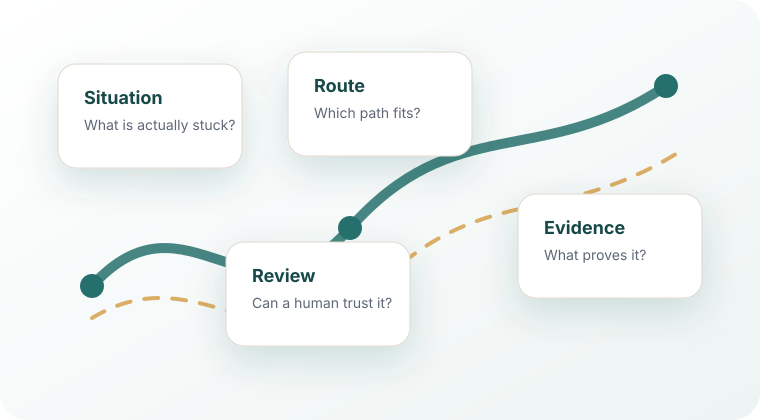

从真实工程工作出发
Ctrl Alt Ship
一张从场景开始的 AI 工程路线图。
AI 编程工具变化很快。真正难的，还是在一个具体工程场景里判断：我现在该试什么？ Ctrl Alt Ship 是一张场景地图。先看你眼前是什么工作，再打开对应场景，把它当成一份独立指南来用。
Scenario Index
先选正在发生的事
选择最贴近当前工作的场景。每个场景都会打开成一份独立教程，而不是一个工具列表。
需求到任务
需求还很模糊，需要变成能执行的任务
把模糊需求收成工程师可以安全开工的一块任务。
02 上下文项目上下文记忆
AI 总是漏掉项目上下文或本地约定
少一点重复解释，让 AI 和新人更快理解项目。
03 实现编码与重构
想用 AI 做实现、迁移或重构
让 AI 帮忙写代码，但改动仍然能被人 review。
04 排障调试
有故障现象，但根因还没被证明
先从现象走到证据，再动手修。
05 验证自动化验证
AI 改了代码，你需要证明它仍然能跑
把“看起来没问题”变成可重复证据。
06 审查代码审查与质量门禁
AI 生成的工作需要在 merge 前 review
在 AI-assisted work 变成维护债之前先拦一下。
07 沉淀文档与知识
决策和项目知识总是散落在聊天里
别让决策和经验继续散落在聊天里。
08 发布发布与变更管理
一个改动需要 release notes、灰度或回滚思考
把发布、灰度、迁移和回滚想清楚。
09 事故事故响应
日志、告警和聊天记录需要整理成事故时间线
把告警、日志、dashboard 和聊天整理成一张事故图景。
10 治理团队 AI 治理
团队需要统一 AI 使用边界
给 AI 工具、数据、review 和 ownership 设清边界。
How It Works
怎么用
选择最贴近当前工作的场景。把它当教程读，不要当 spec 读。每一页都会先从工程师真实会遇到的那种混乱时刻讲起，再给路线、例子、检查方式和容易踩的坑。
工具说明只用于比较。先确定场景，再看工具。
先判断现在卡住的是需求、上下文、实现、验证，还是协作。
进入对应场景页，看路线、适用条件、避坑和最小实践。
用检查、测试、review 或发布信号证明这条工作流可信。